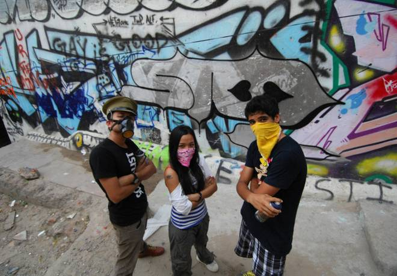

Theirs are faces you would not have seen and probably never will. But some of you know them through their writing on the wall, in the literal sense of the phrase. When most of us are getting back home, they are heading towards their destination, a dilapidated building, an abandoned plot or just any other wall in a plush locality, to splash it with colour. They might not be celebrated but artists they indeed are. They are graffiti artists or graffiti writers whose canvas is not a cotton or linen fabric stretched across a wooden frame but the entire city. Street art has been inherent to our cityscapes, slogans, announcement of rallies, posters and funny one-liners, but graffiti art, in the strictest sense of the genre, has not had much of a tradition, but of late the graffiti scene has registered increased activity.Meet three witty, enthusiastic and cool graffiti writers who have been painting the town red for some time.
Treble
At 15, he is one of the youngest graffiti artists around
Treble is one of the basics, any piano player or lover would tell you. He was named after one of the two clefs, the two signs, Treble clef and Bass clef, which basically tell you whether to play high notes or low notes. Treble plays the piano and was named so by his best friend. Treble plunged into the scene two years ago and the first thing he did was to paint the roof of his house in Gurgaon. I was mesmerised by this art form when I went to New York. I came back and started doing a lot of cartoon characters, like from South Park. Now, I am focusing on creating my original style and tag. So, in a way, my style is still evolving. I talk to fellow graffiti artists and gain so much from these discussions. In fact, Daku has really motivated me during our jams when we have painted together and will be doing so in future, says Treble, whose favourite combo is black, light green and pink.
Not much known in Delhi, Treble informs us that his scribbles in Phase I, II and III of Gurgaon have earned him recognition. But that does not mean everybody in his school or class knows he is the one who is Treble. Very close friends know the secret, though people know I am into art, says Treble, who uses both spray cans and wall paint to make his pieces.
After Gurgaon, his next aim is Delhi, and he has already done three works here; one at Malviya Nagar, another on Prithviraj Road, and the third one on the boundary wall of a metro station. What a braveheart to have attempted Prithviraj Road! I was with my parents and we were crossing that area and we saw an abandoned building. My parents dropped me there and I did it. When I saw somebody coming, I scaled the wall and ran off. I do parkour, which helps.
A good graffiti, according to the rising star, should express feelings through bold and bright colours.